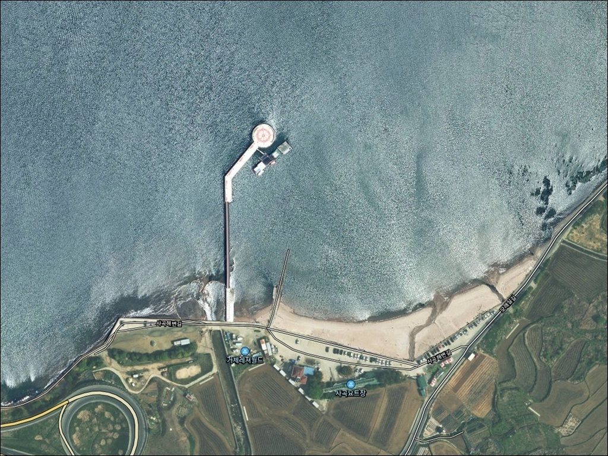
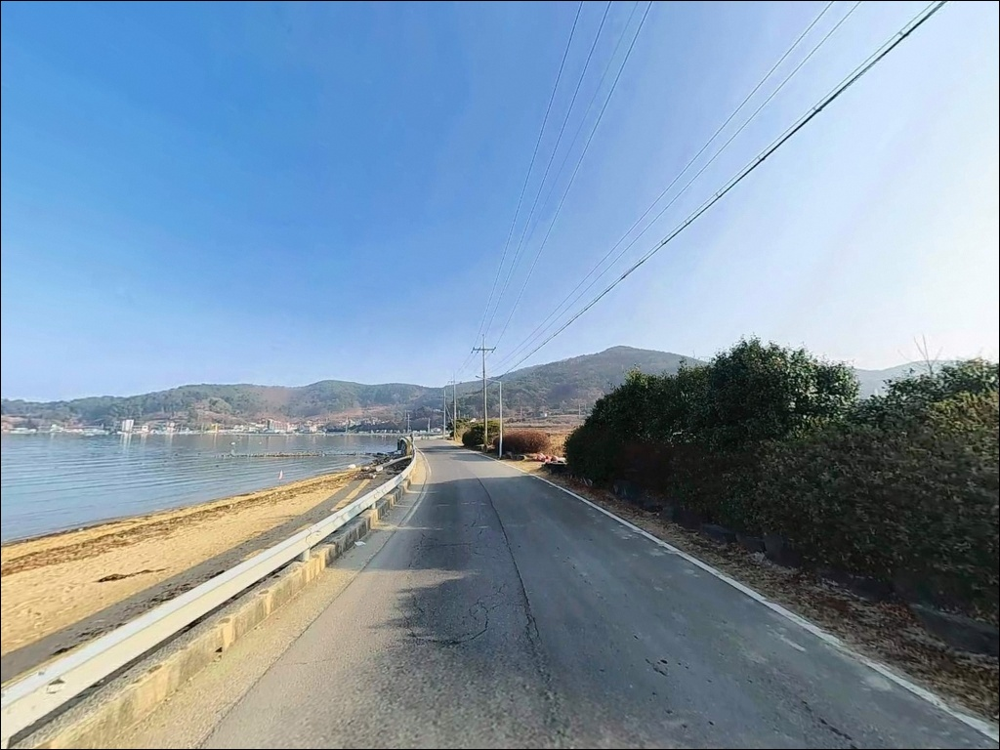
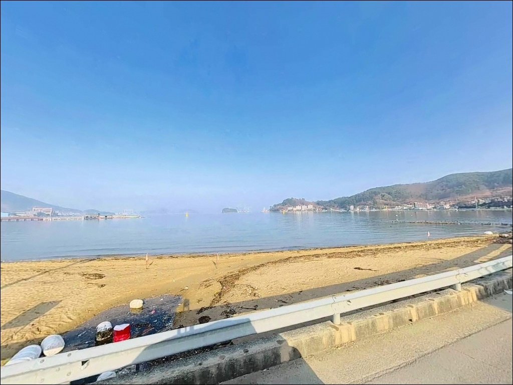
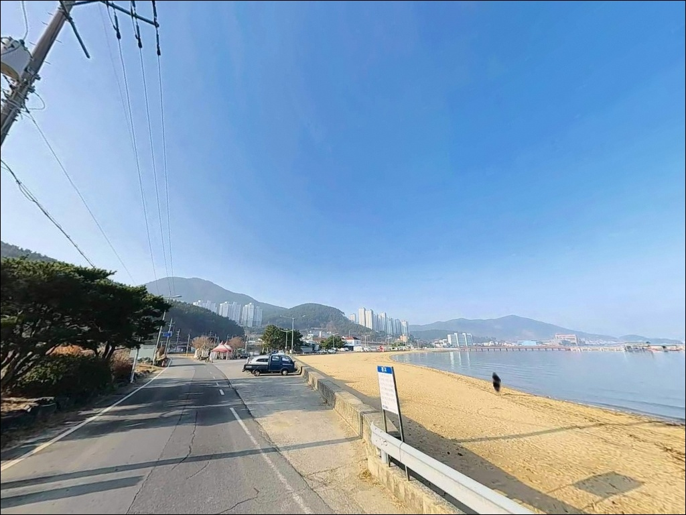
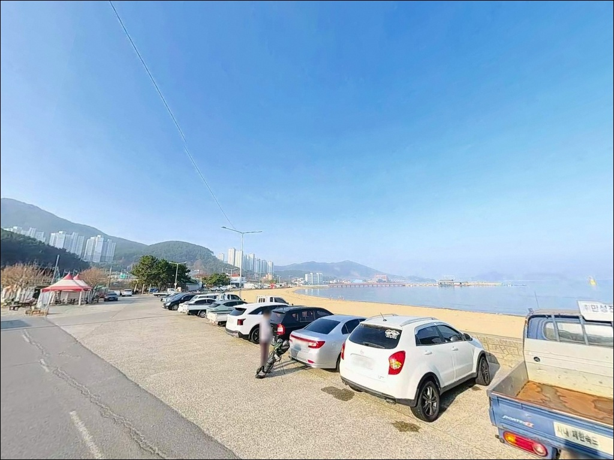
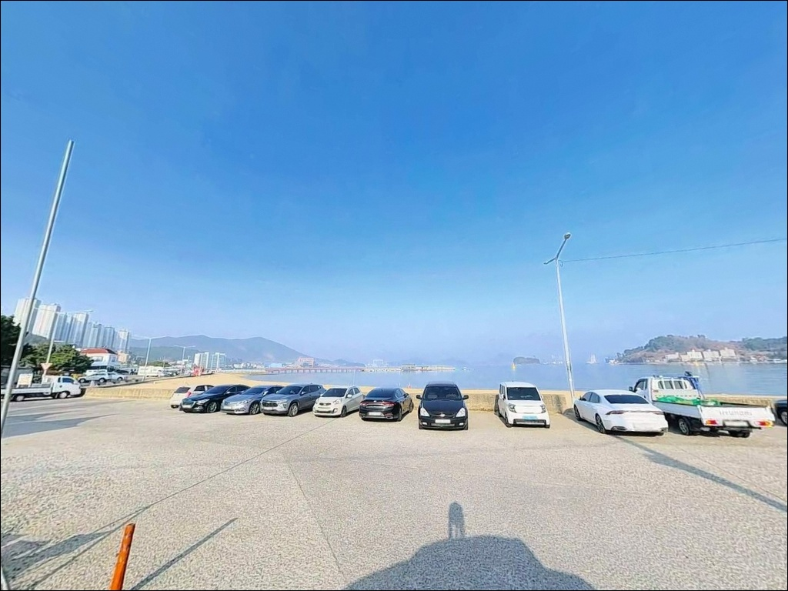
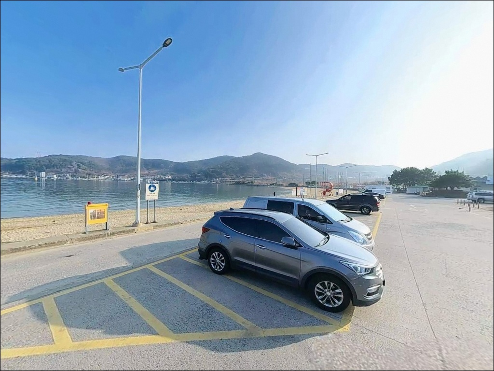
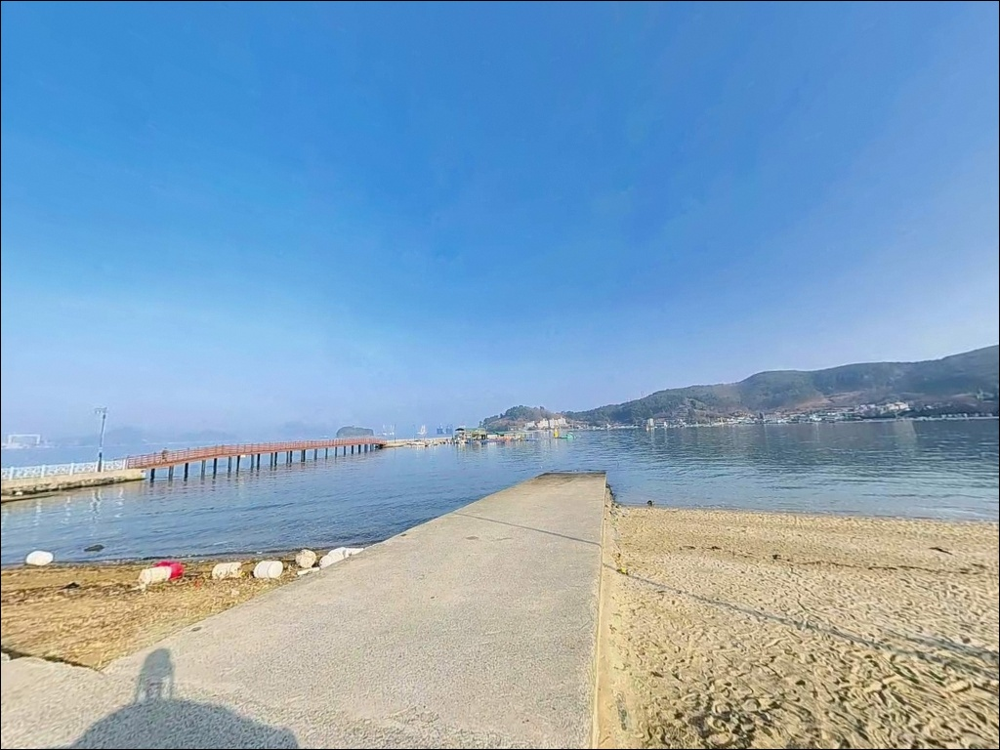
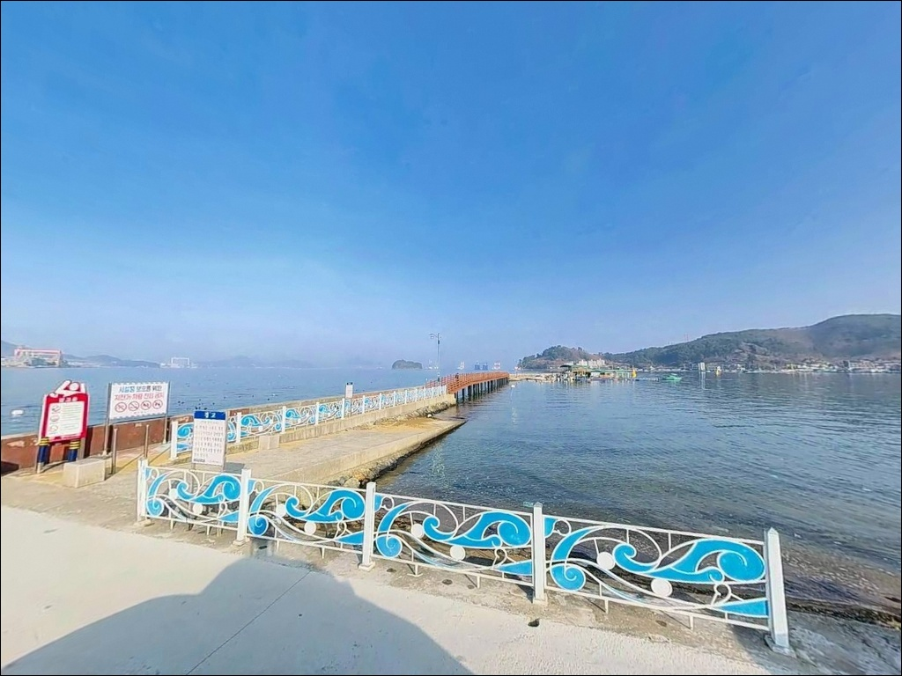

해변 수심 1m라 안 나오던 거제 사곡해수욕장, 방파제 콧부리에서 잡은 원투낚시 입질
이 페이지에는 광고(제휴 링크 포함)가 있으며, 광고 링크를 통해 구매하면 운영자가 판매 수익 또는 수수료를 받을 수 있습니다. 포인트 사진: 카카오맵 스카이뷰·로드뷰. 이 페이지의 지도·사진 이미지는 카카오맵의 실제 서비스 이미지와 다를 수 있습니다.


포인트 안내
사곡해수욕장
경남 거제시 사등면 사곡리 757-1
처음 방문하는 낚시인이 가장 많이 하는 실수는
해변 전면에서 채비를 던지다가
시간을 다 소비하는 것입니다.
사곡해수욕장 해변 중앙부는
수심이 1~2m 안팎으로 얕아
낚시 대상 수층이 거의 형성되지 않는 구조입니다.
실질적인 낚시 포인트는 해변 남단의
소형 방파제와 조간대 경계 구간에 있습니다.
사곡해수욕장은 거제도 서부,
사곡만 안쪽에 자리한 내만형 해변입니다.
넓은 백사장과 조용한 수역이
가족형 해수욕지로 알려진 곳이지만,
방파제 구조를 파악하고 들어가면
원투낚시와 루어낚시 모두 성립하는
지형 조건을 갖추고 있습니다.
이 글은 사곡해수욕장의
방파제 위치와 낚시 가능 구간,
진입 여건과 차박 조건에 집중합니다.
조황 단정이나 특정 어종 보장은
이 글의 범위에 포함되지 않습니다.

1. 진입 동선과 포인트 접근성
사곡해수욕장은 거제대로(14번 국도)에서
사곡 방면으로 분기하는 포장 도로를 타면
해변 바로 앞까지 차량으로 들어올 수 있습니다.
거제 고현 시내에서 약 10분 거리이며,
진입로는 포장 상태가 양호하고
급경사 없이 해수욕장으로 이어집니다.
공영 주차장이 해변에 직접 인접해 있습니다.
수십 대 이상 수용 가능한 넓은 부지로,
무료로 개방되어 있습니다.
해변과 차량 사이 거리가 짧아
낚시 장비 이동 동선이
거제 서부권에서 가장 편한 구조에 속합니다.
대형 SUV, 캠핑카 모두 회차에 문제가 없는
넓은 주차장 구조입니다.
해변 안쪽 공터와 선착장 인근 도로변에도
주차 공간이 추가로 확보되어 있어
성수기 외 시기에는 자리 걱정 없이
진입할 수 있는 포인트입니다.

2. 차박 환경과 야간 체류 여건
사곡해수욕장은 관광지 구조여서
완전한 고립형 포인트와는 성격이 다릅니다.
해변 주변 가로등이 설치되어 있고
사곡마을 민가와 요트 레저시설이 인접해 있어,
야간에도 적당한 밝기가 유지됩니다.
어둠이 완전한 노지형 환경을 선호하는 차박객에게는
어울리지 않는 구조입니다.
반면 해변 바로 앞 주차장 구조 덕분에
차량에서 바다까지 동선이 짧고,
낚시를 마치고 바로 차로 돌아올 수 있는
편의성은 높습니다.
비수기에는 유동 인구가 줄어
상대적으로 조용한 체류 환경이 형성됩니다.
여름 개장 기간(7월 초~8월 중순)에는
해수욕장 내 야영과 취사가 금지됩니다.
비수기 방문 시에도 현장 고지 사항을
사전에 확인하는 것이 기본 준비입니다.
내만형 해변이라 파도 소음이 적고
바람 영향도 외해 방파제보다 약한 편이어서
차박 수면 환경 자체는 나쁘지 않습니다.


3. 주변 편의시설 및 인프라 현황
사곡해수욕장은 공영 주차장 인근에
공중화장실이 상설 운영됩니다.
샤워실은 여름철 개장 기간 운영되며,
매점도 성수기 기준으로 운영됩니다.
요트 레저사업장이 해수욕장 옆에 붙어 있어
부대 시설 수준은 거제 해변 중 높은 편입니다.
반경 3km 이내 사등면 소재지와
고현동 초입에는 편의점, 식당가,
주유소가 밀집되어 있습니다.
낚시 용품점도 도로변에서 찾을 수 있어
부족한 채비나 소품은
현장 도착 직전에도 보충이 가능한 구조입니다.
응급 상황 발생 시에도 고현 시내까지
차량으로 10~15분 거리에
거제중앙병원 등 의료시설이 있습니다.
원격 섬 지역 포인트와 달리
인프라 접근성이 거제에서 가장 좋은 편에 속합니다.

4. 방문 전 챙겨야 할 준비사항
사곡해수욕장 방문 전 가장 먼저 확인할 것은
방파제 끝단 접근 가능 여부입니다.
여름 성수기에는 해수욕장 이용객이 많아
백사장 내 낚시 투척 시
안전거리 확보가 어려운 상황이 생깁니다.
비수기 방문이 낚시 여건상 유리하며,
출조 전 사등면 일대 조황을 검색해두면
방문 효율을 높이는 데 도움이 됩니다.
조석 예보 확인도 이 포인트에서 중요합니다.
내만형 해변 특성상 썰물 때 갯벌이 노출되고
수심이 얕아지면 낚시 가능 구간이 줄어듭니다.
들물로 전환되는 시점에 맞춰 입장하면
조간대 경계 구간에서 낚시 효율이 높아집니다.
기상청 해상 예보도 당일 아침에 한 번 더
확인하는 것이 기본입니다.
마을 선착장과 요트 레저시설이 붙어 있는 구조라
계류 시설 주변 동선에 주의해야 합니다.
야간 낚시 시에는 헤드랜턴을 별도로 준비하고,
구명조끼는 방파제 끝단 낚시 시 필수입니다.
채비 쓰레기(낚싯줄, 봉돌, 바늘)는 반드시 수거하고,
거제시 종량제 봉투를 사전에 준비해두는 편이 좋습니다.

5. 해변에서 채비를 던지기 전에 방파제 위치부터 확인해야 하는 이유
사곡해수욕장의 낚시 여건을 결정하는 것은
해변 전면부가 아니라
남단에 자리한 소형 방파제 구조입니다.
해변 중앙부 수심은 1~2m 안팎으로
낚시 대상 수층이 거의 만들어지지 않습니다.
방파제 끝단 방향으로 진행할수록
수심이 점차 깊어지면서
수심 변환 구간이 형성됩니다.
방파제 콧부리 구간은 이 포인트에서
낚시 효율이 가장 높은 자리입니다.
외항 방향은 거제 해협을 향하고 있어
조류 소통이 내항보다 활발합니다.
방파제 좌측 석축 주변에는
수중여 지형이 혼재하여
어종이 은신하기 좋은 구조를 이루고 있습니다.
해변 끝 라인에도 들물 시 수위가 높아지면서
조간대 경계 구간이 생깁니다.
이 경계 구간은 원투낚시 포인트로 기능하며,
모래 지형 특성상 밑걸림이 적어
채비 손실 없이 바닥 탐색이 가능한 구조입니다.
출조 전 사등면 일대 조황은 꼭
검색해 보시길 권합니다.


6. 사곡 방파제에 어울리는 낚시 스타일
방파제 끝단 원투낚시가 이 포인트에서
가장 기본적인 낚시 스타일입니다.
모래 지형 위주의 바닥 구조는 밑걸림이 적어
채비를 멀리 보낸 뒤 여유 있게 기다리는 방식에 적합합니다.
이 일대 내만 해역에서 기대해볼 수 있는 어종은
도다리, 보리멸, 붕장어, 전갱이 계열입니다.
야간에는 붕장어를 비롯한 야행성 어종을
바닥층에서 기대해볼 수 있습니다.
방파제 석축 주변에서는
갑오징어 에깅과 볼락 라이트게임도 성립합니다.
이 일대 사등면 해역 패턴상
가을철 방파제 주변 석축에서
갑오징어 에깅 채비 운용이 가능한 지형 조건을 갖추고 있습니다.
야간 가로등 주변에서는 전갱이 루어낚시도
시도해볼 수 있습니다.
해변 전면에서는 서프낚시 방식이 어울립니다.
썰물 이후 들물로 전환되는 시점에
조간대를 향해 장타 캐스팅하는 방식으로,
조류를 이용해 채비를 흘리는 서프낚시는
모래 해변 구조에서 가장 효율적인 방법입니다.
봄~가을 사이에는 방파제 끝단과 수로 쪽에서
숭어, 학공치 등 생활낚시 어종을 대상으로
찌낚시도 가볍게 즐길 수 있는 구조입니다.

7. 대안 포인트와 플랜 B 동선
사곡해수욕장 방파제 조건이 기대에 못 미칠 때
가장 가까운 대안은
사등방파제입니다.
사곡해수욕장에서 차량으로 약 3분 거리이며,
방파제 구조가 갖춰져 있어
원투낚시와 루어낚시 모두 운용이 가능합니다.
금포항 방파제도 비슷한 거리에 있는
대안 포인트입니다.
해안 제방을 따라 도보 루어낚시 동선이
형성되어 있어 사곡해수욕장과
함께 묶어 돌아볼 수 있습니다.
두 포인트를 세트로 묶는 동선이
사등면 서부 권역에서 가장 효율적인 이동 경로입니다.
더 본격적인 방파제 낚시를 원한다면
가조연육교를 건너 가조도 방면으로 이동하는 방법이 있습니다.
신전방파제, 창촌방파제 등 크고 작은 방파제가
10개 이상 분포하는 해역으로,
감성돔, 갑오징어, 무늬오징어, 볼락 등
다양한 어종을 기대할 수 있는 검증된 권역입니다.
사곡해수욕장에서 차량으로 약 10~12분 거리입니다.

방파제 구간을 알고 가면
사곡해수욕장이 달라 보입니다
거제 시내에서 10분 안에 닿고,
넓은 무료 주차장이 해변 바로 앞에 있으며,
화장실과 편의시설까지 갖춰진 포인트는
거제에서도 흔하지 않습니다.
원투낚시, 에깅, 서프낚시, 볼락 라이트게임을
한 자리에서 시도해볼 수 있는
복합 지형 구조를 갖추고 있습니다.
다만 해변 전면에만 집중하다가
방파제 끝단 구간을 놓치면
이 포인트의 절반밖에 쓰지 못합니다.
방파제 위치 확인, 들물 타이밍 파악,
성수기 여부 확인,
이 세 가지를 갖추고 들어가면
기대 이상의 낚시를 즐길 수 있는 곳입니다.
차박을 겸한다면 비수기 방문이 훨씬 낫습니다.
낮에는 방파제에서 채비를 운용하고,
해 질 무렵 차로 돌아와
바다가 바로 보이는 위치에 자리를 잡는다면
거제 서부권에서 가장 편한 낚시 차박이
될 수 있는 포인트입니다.